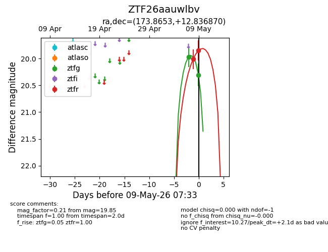
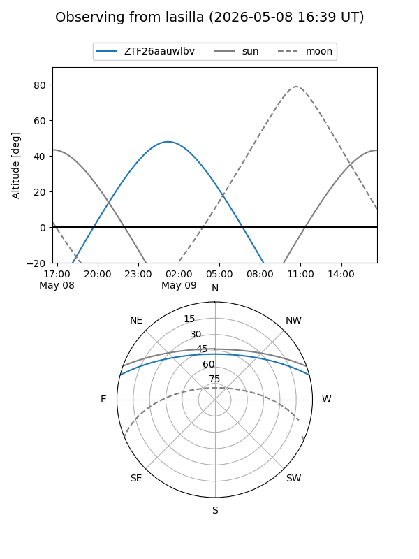
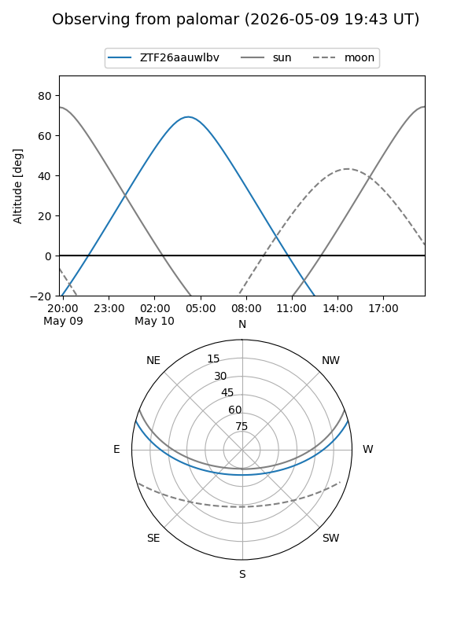
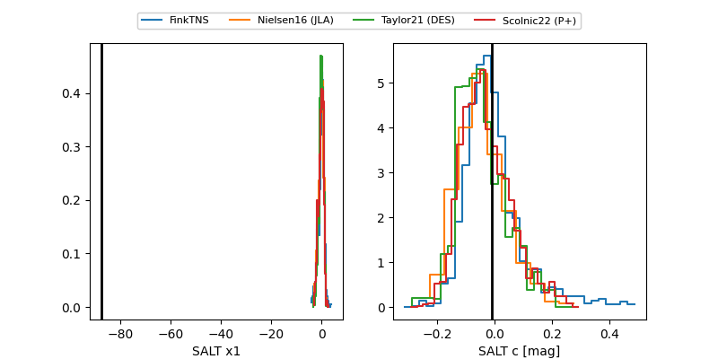

ZTF26aauwlbv
Target ZTF26aauwlbv at 2026-05-09 07:34
Aliases and brokers:
FINK: link
Lasair: link
ALeRCE: link
alt names
ZTF26aauwlbv (ztf,fink_ztf)
Coordinates:
equatorial (ra, dec) = 173.8653,+12.83687
equatorial (HMS+DMS) = 11:35:27.67,+12:50:12.73
galactic (l, b) = (247.9857,+67.19148)
Flags:
Photometry:
last ztfg=20.31, ztfr=19.85
2 ztfg, 2 ztfr detections
Lightcurve

Visibility


Additional plots
